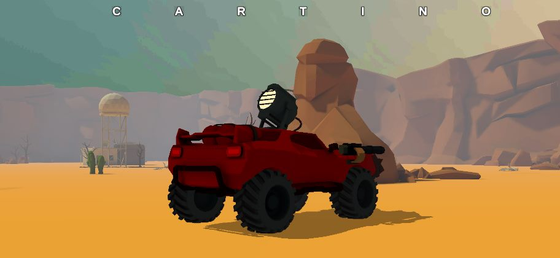

What it is
Bullet hell rules on a driveable vehicle. Waves of enemies fill the arena with projectiles and the only way through is reading patterns and keeping the car moving. The build target was Android, which set the budget for everything: how many projectiles could be alive, how much the enemies were allowed to think per frame, and how much of the arena could be on screen.
The patterns, and why each one
This is a learning project and I will not pretend otherwise. What makes it worth keeping is that it is the first time I chose a structure because of a problem rather than because a video told me to.
- Object pooling for projectiles. On a phone, allocating and collecting a few hundred bullets a second is the difference between a game and a slideshow. I pooled them because I could feel the stutter, not because I measured it, which is a habit I have since replaced with measuring.
- A finite state machine for enemy behaviour, so adding an enemy type meant adding states and transitions rather than adding branches to something already too long.
- Observer for the events several systems care about, so the UI and the audio could react to the game without holding references into it.
- Singleton for the manager objects. I would use fewer of these now. They make a dependency graph invisible rather than absent.
Six years later the direct line from this project is the object pool. It is the same idea as the pooled state objects in the battle system I lead now, and the same idea as the packed component pools in the 2D engine I wrote two years after this. The thing I got wrong here, reaching for a singleton whenever two objects needed to talk, is the thing the event bus in that engine exists to avoid.